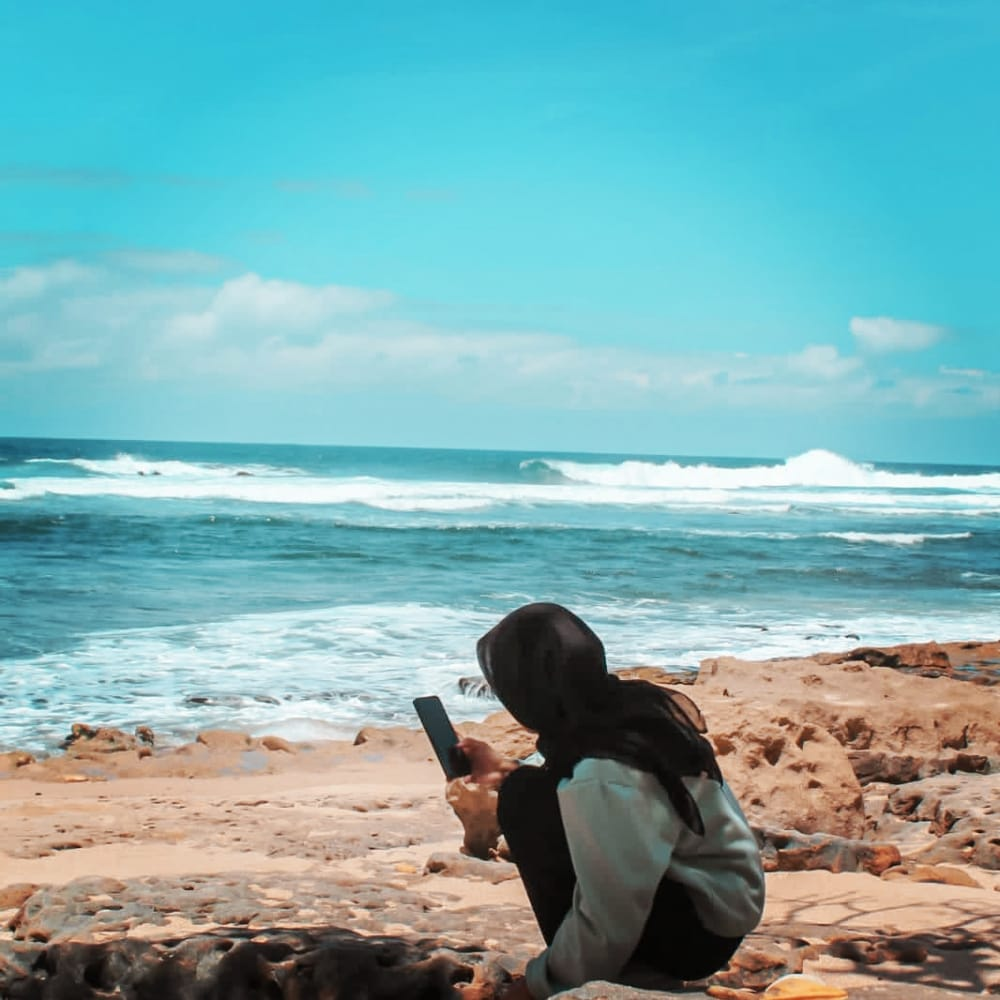

Hai
Saya Nurjanah, saya salah satu mahasiswa di universitas Yudharta pasuruan. saya menggambil prodi teknik infomatika dikampus tersebut, alasan saya menggambil prodi tersebut karena saya ingin mencoba hal baru dan untuk pempelajarin tentang IT.
Note: Berani Mencoba Hal Baru Dalam Hidup
